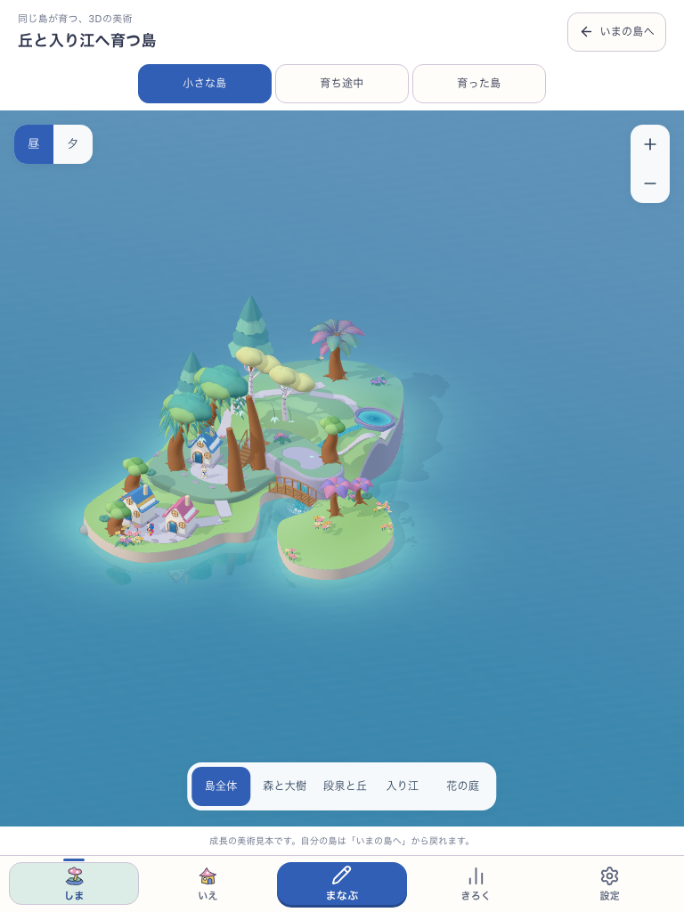
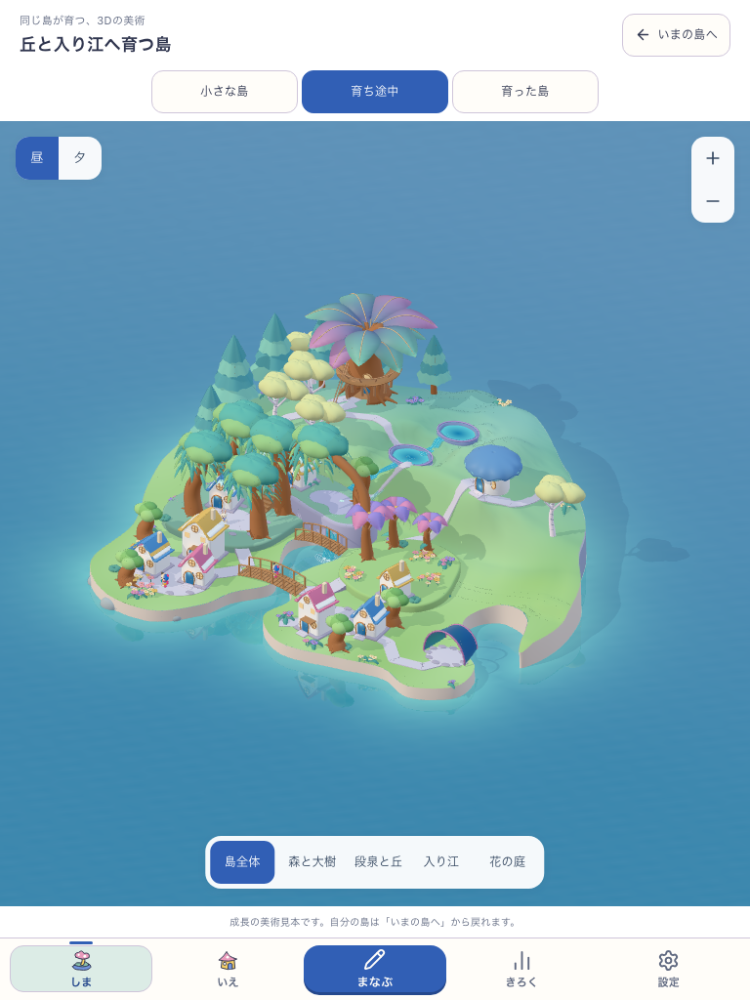
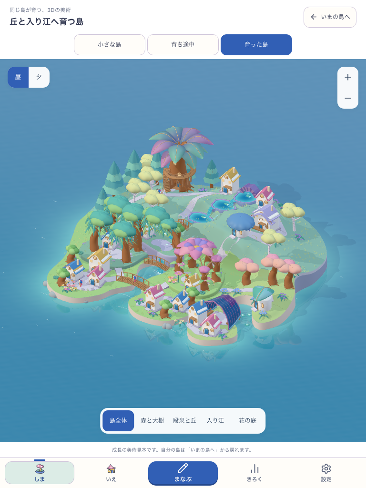
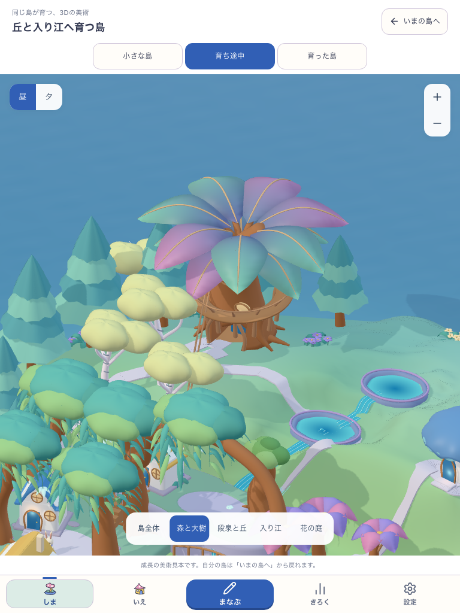
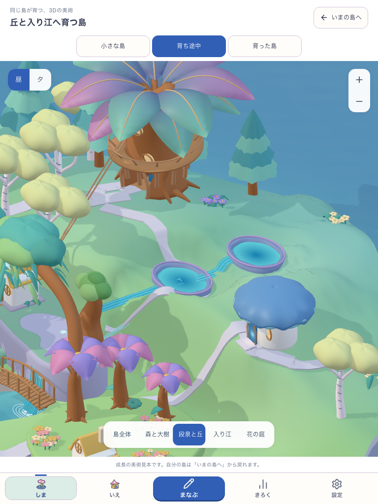

ONE ISLAND · THREE AUTHORED STATES · 2026.10.11
ひとつの島が、
風景になる。
青紫の扇葉、琥珀色の幹、青い泉と色を透かす貝。同じ場所が育ち、丘と入り江、森と庭がつながる三段階を、実際の3Dで作りました。
実アプリで見回す、成長の美術大きく開く ↗
上の「小さな島／育ち途中／育った島」で切り替えられます。ドラッグで見回し、ピンチで拡大。今回は美術見本で、本人の所有や成長時計は変更しません。
SAME CAMERA · SAME WORLD SCALE
ものの数だけでなく、場所の形が育つ。
三枚は同じカメラ、同じ家の縮尺です。海岸線と高低差、水が下る経路、大樹と花の支持が変わり、島全体の輪郭が大きくなります。


小さな島
若い扇葉と一つの泉。低い丘から森の小道へ水と道がつながる。


育ち途中
根が空洞と回廊を持ち、二つの泉が水を分ける。入り江には開いた殻の居場所。


育った島
採用済みの完成原本。大きな樹冠、三段の泉、深い入り江、花の屋根と集落。

STRUCTURE BEFORE ORNAMENT
不思議を、形と素材で作る。

幹の中に入れる大樹
色付きの扇葉の下に、実際の空洞と枝の回廊。小さな扉の置物を足すだけにしません。

水を分ける鉱石の泉
器と水面を分け、縁と水深に違う素材を使う。水の下る方向に、岸と道を合わせます。
EDITABLE ART
この美術から、実装をつなぐ。
完成景を原本として、若い形と地形を造形しました。次は同じ部品を本人の配置・成熟・地形判定へ接続し、見た目と実際に通れる場所を一致させる工程です。
制作と受入の境界
実アプリ内の開発用美術確認です。成熟原本は変更せず、若い段階だけを制作。模型の家・人物を本人の所有や人口として数えません。美術の新しい段階の採用、子どもの無説明理解、実機・公開は、それぞれ別に確認します。